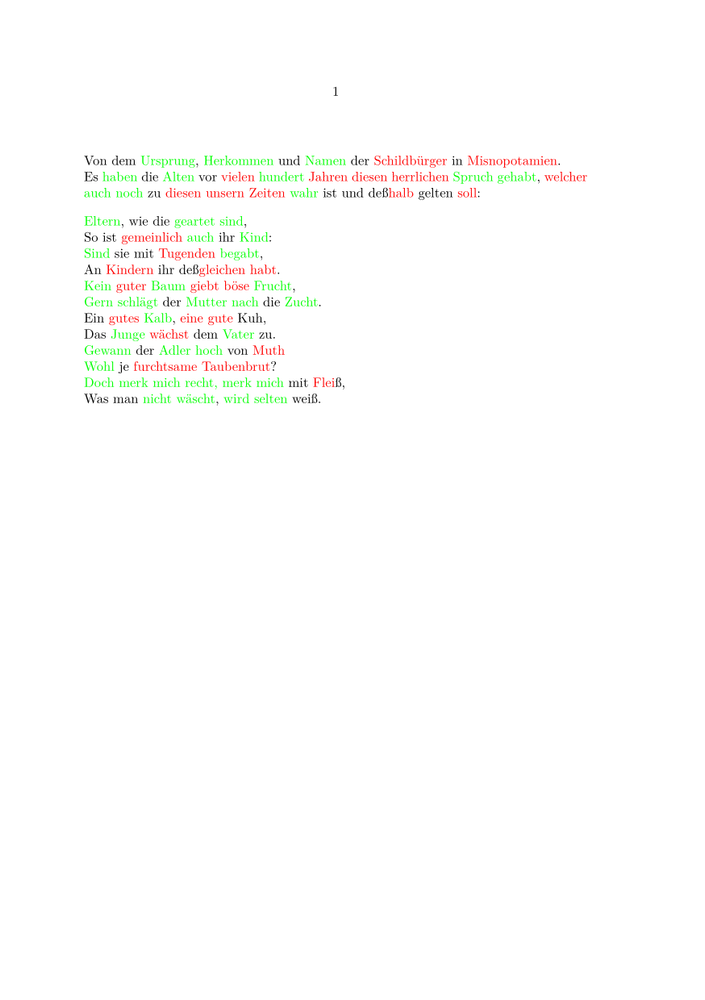

| NOTE: This feature works only in MkIV |
Contents
Introduction
One of the various new features in MkIV is a simple spellchecker. It allows you to highlight right and wrong words with different colors.
Wordlist
ConTeXt needs a list with the correct spelling of the words to be able to check them.
For the example below a list with the following content was used, to test the sample on your own save the list in a textfile with the name words-de.txt with UTF-8 encoding.
Adler Alten Baum Doch Eltern Frucht Gewann Herkommen Junge Kalb Kind Mutter Namen Spruch Ursprung Vater Wohl Zucht auch begabt deßgleichen geartet gehabt gelten gern haben hoch hundert kein merk mich nach nicht noch recht schlägt selten sind wahr wird wäscht
Example
We will test now the function with the following example. The word list is loaded with the \loadspellchecklist command. With the first argument to set the language of the text file and with the second the name of the file. The command \setupspellchecking enables the spell checking function for your document.
\setupcolors[state=start] \loadspellchecklist[de][words-de.txt] \setupspellchecking[state=start] \mainlanguage[de] \starttext Von dem Ursprung, Herkommen und Namen der Schildbürger in Misnopotamien. Es haben die Alten vor vielen hundert Jahren diesen herrlichen Spruch gehabt, welcher auch noch zu diesen unsern Zeiten wahr ist und deßhalb gelten soll: \startlines Eltern, wie die geartet sind, So ist gemeinlich auch ihr Kind: Sind sie mit Tugenden begabt, An Kindern ihr deßgleichen habt. Kein guter Baum giebt böse Frucht, Gern schlägt der Mutter nach die Zucht. Ein gutes Kalb, eine gute Kuh, Das Junge wächst dem Vater zu. Gewann der Adler hoch von Muth Wohl je furchtsame Taubenbrut? Doch merk mich recht, merk mich mit Fleiß, Was man nicht wäscht, wird selten weiß. \stoplines \stoptext
The output of the example above is:
- 
Wordcount
The spellchecker can also be used to include the word count in a document.
\setupspellchecking[state=start,method=2] \ctxlua{languages.words.threshold=1} \starttext \input knuth \ctxlua{ context.par() local data = table.load(file.addsuffix(tex.jobname,"words")) context(data and data.total or "nothing") } \stoptext
The wordcount appears in your file and a file containing 'statistics' is created and saved with the extension .words.